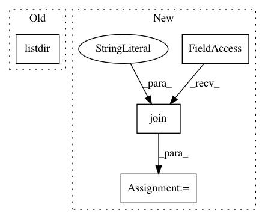

7d66d48a57519e5c5f8e76de94156c8de9924dd0,test/automl/test_start_automl.py,AutoMLTest,test_automl_outputs,#AutoMLTest#,73
Before Change
proc.wait()
// Start time
print(os.listdir(os.path.join(output, ".auto-sklearn")))
start_time_file_path = os.path.join(output, ".auto-sklearn",
"start_time_100")
with open(start_time_file_path, "r") as fh:
After Change
"predictions_ensemble"))
self.assertIn("predictions_ensemble_100_00001.npy", fixture)
fixture = os.listdir(os.path.join(output, ".auto-sklearn",
"models"))
self.assertIn("100.1.model", fixture)
fixture = os.listdir(os.path.join(output, ".auto-sklearn",
"ensembles"))
In pattern: SUPERPATTERN
Frequency: 3
Non-data size: 4
Instances
Project Name: automl/auto-sklearn
Commit Name: 7d66d48a57519e5c5f8e76de94156c8de9924dd0
Time: 2016-02-11
Author: feurerm@informatik.uni-freiburg.de
File Name: test/automl/test_start_automl.py
Class Name: AutoMLTest
Method Name: test_automl_outputs
Project Name: pyinstaller/pyinstaller
Commit Name: 61b1c75c2b0469b32d114298a63bf60b8d597e37
Time: 2017-12-15
Author: david.hoese@ssec.wisc.edu
File Name: PyInstaller/hooks/hook-shapely.py
Class Name:
Method Name:
Project Name: tensorflow/datasets
Commit Name: 3404c3e64990dc7290a944313f3dccca54512710
Time: 2019-12-06
Author: c.taneja09@gmail.com
File Name: tensorflow_datasets/image/food101.py
Class Name: Food101
Method Name: _generate_examples